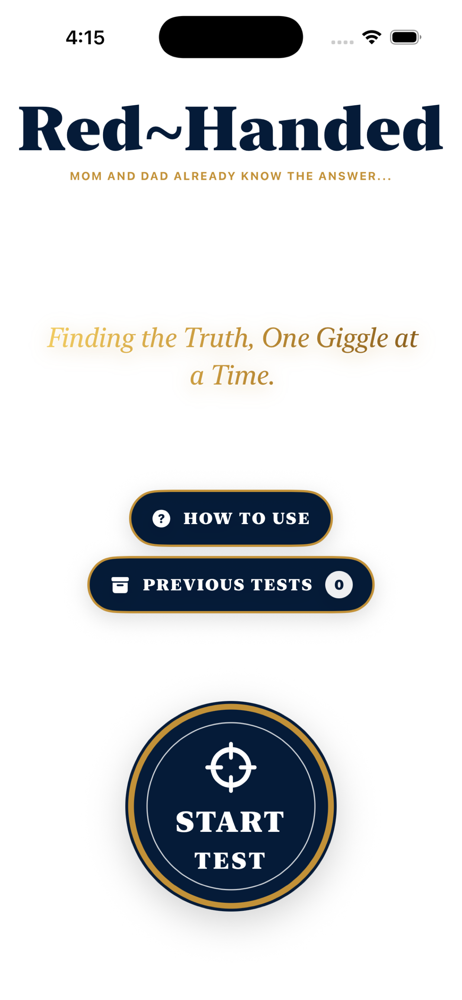
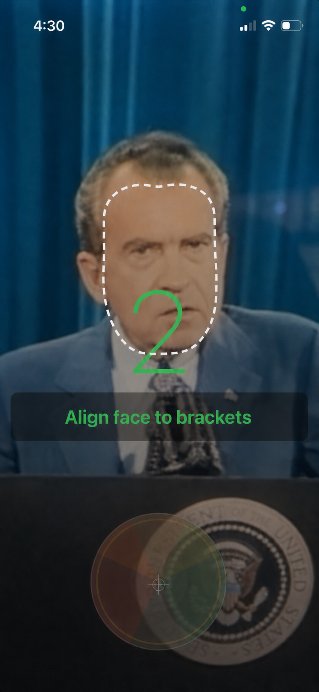
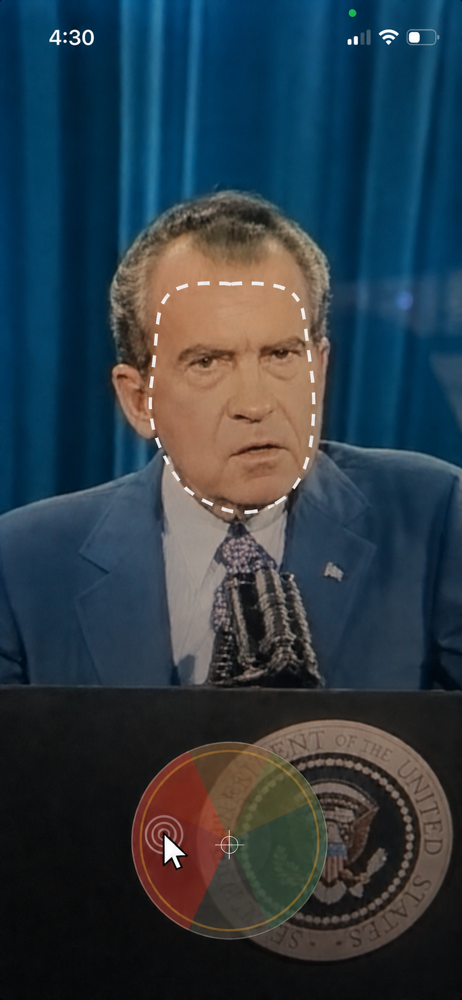
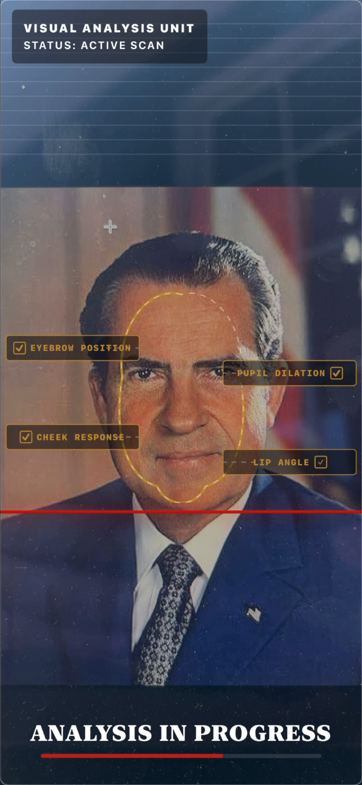
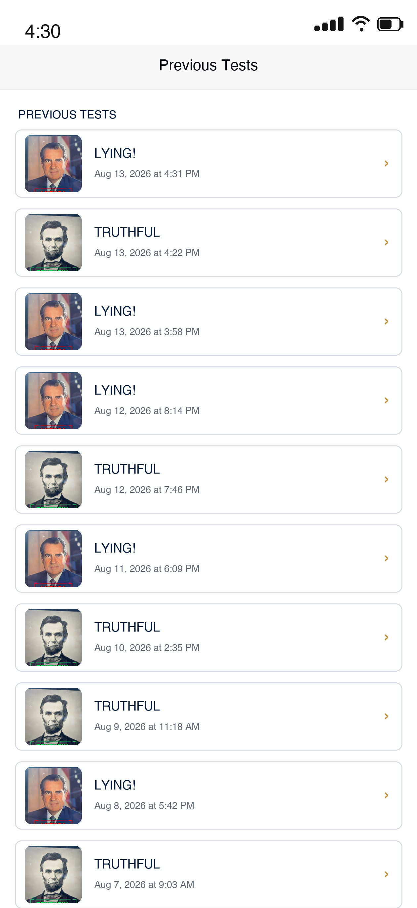
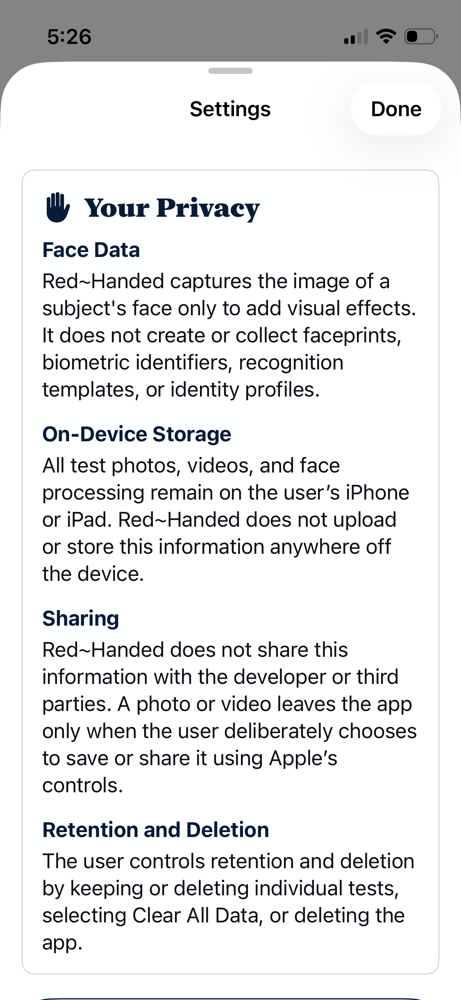

Three verdicts
Choose Truthful, Inconclusive or Lying so every test lands where the moment needs it.
For iPhone and iPad. Entertainment only—not a real lie detector.
FUNNY LIE DETECTOR · FAMILY PRANK GAME
Red~Handed turns everyday questions into funny investigations. Test your kids, friends or family, secretly choose the verdict, and let the app deliver the dramatic result you already knew was coming.
Not real, but really fun. Test media and face processing stay on your device unless you choose to save or share them.
HOW THE PRANK WORKS
Turn an ordinary question into a full-blown investigation in less than a minute.
Open a new case and line up your suspect for questioning.

Frame their face inside the aiming brackets during the countdown.

Secretly tap Truthful, Inconclusive or Lying while they answer.

The animated analysis builds suspense before the final verdict.
EVERYTHING AN INVESTIGATOR NEEDS
Choose Truthful, Inconclusive or Lying so every test lands where the moment needs it.
A suspenseful scan, official-looking graphics and sound sell the joke before the reveal.

Red~Handed saves all of your tests locally on your device for you to replay whenever you choose. You can download or share these videos that include the question, the answer, and the full assessment and verdict.

Photos, videos and face effects remain on the device unless the user deliberately saves or shares them.

THE TRUTH BUTTON AWAITS
Made for harmless family fun, playful interrogations and reaction videos—not real accusations or consequential decisions.